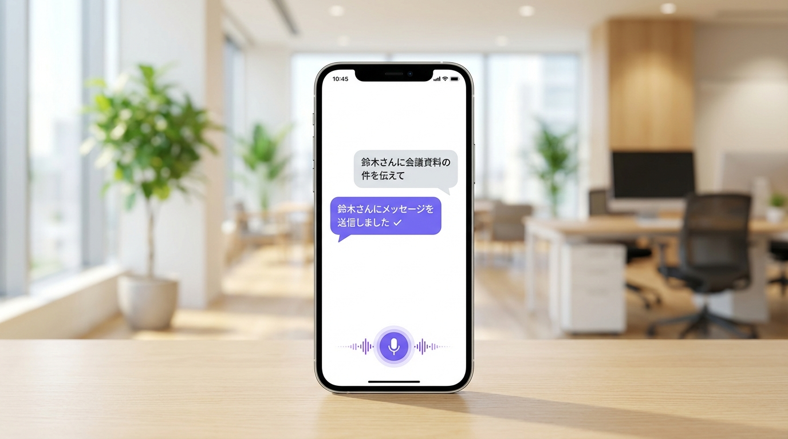
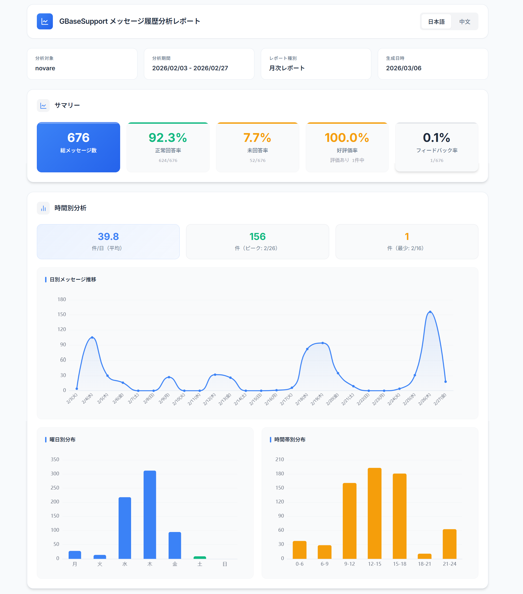

「温故創新」──伝統と革新を束ねる場で生まれた摩擦
「温故創新の森 NOVARE」は、清水建設が2023年に開設したイノベーション拠点だ。施設名の「NOVARE」はラテン語で「新しいものを創る」を意味し、同社が220年以上にわたり培ってきた技術・文化・人の知恵と、最先端テクノロジーを融合させる場として設計されている。過去を大切にしながら未来を切り拓く──この「温故創新」の哲学が、施設のあらゆる場所に宿っている。
東京都江東区に位置するHub・Lab・Academy・Archives の4棟と旧渋沢邸で構成されたこの施設は、清水建設の社員だけでなく、入居企業やパートナーが集い新たなイノベーションを共創する場として機能している。AIやIoTを積極的に活用し、「建物が考え、応える」未来を体現することが、NOVAREに課せられたミッションでもある。
だが先進的なコンセプトの裏側に、日常業務の摩擦が潜んでいた。会議室の照明を変えたいときはリモコンを探し、管理画面にログインし、フロアを選んで部屋を選んでデバイスを選ぶ──平均5ステップの操作が必要だった。「誰がどこにいるか」を確認したいときは内線を回し、繋がらなければまた別の内線を試みる。メッセージを送るにはPCを開いてアプリを起動する必要があった。
建物内に位置情報システムや設備制御システムは既に存在していた。問題はそれらが「専用の管理画面からしかアクセスできない」という点にある。各システムはサイロ化しており、社員は目的に応じてツールを使い分けなければならなかった。「最先端の施設で、なぜこんなに手間がかかるのか」──その矛盾が、AIコンシェルジュ導入の出発点になった。
「新しいシステムを追加する」のではなく、「既存を束ねる」
NOVAREが求めたのは、新たなシステムを導入することではなかった。設備制御・屋内位置情報・社内メッセージ・天気情報という既存の4システムを、一つの会話インターフェースで扱えるようにすることだった。
GBase Support は MCP（Model Context Protocol）による外部システム連携を前提として設計されており、各システムへのAPI追加だけで統合が完了する。既存インフラへの追加開発が最小限で済む点が、導入判断の大きな根拠となった。POCから本番稼働まで数週間で完了できた。
もう一つの要件は「音声での操作」だった。会議中・作業中など両手がふさがった状態でも使えること、キーボードなしで直感的に操作できること──これを実現するため、リアルタイム音声対話機能を持つ GBase Support が採用された。QRコードをスマートフォンで読み込むだけでAIコンシェルジュにアクセスできる簡便さも、社員への展開コストを低く抑えた。

「話す」だけで、建物が動く
導入後、NOVARE の社員は施設内の各所に設置されたデバイス、または自身のスマートフォン（QRコードアクセス）からAIコンシェルジュを呼び出す。音声で話しかけるか、テキストで入力するかは状況に応じて選べる。
設備制御（照明・空調・ブラインド）
「ここの照明を50%にして」と話しかけるだけで、AIが現在地を認識し照明を調整する。従来5ステップかかっていた操作が、1回の発話で完了する。
社員の所在確認
「佐藤さんはどこにいますか？」と聞くと、屋内位置情報システムと連携してフロアと部屋を即座に回答する。内線電話を何度もかけ直す必要がなくなった。
社内メッセージ送信
「鈴木さんに会議資料の件を伝えて」と話すと、社内メッセージツールを介してメッセージが送信される。PCを開かなくても、移動中でも社内連絡が完了する。
情報取得
「今日の天気は？」「この会議室の午後の予約状況は？」といった問いにも対応。外部情報・施設内情報を一問一答で取得できる。

現場からの評価
操作に失敗しても、AIが自ら気づいて対応してくれる。まるで人と話しているようで驚きました。
施設運営担当者
清水建設 NOVARE
実際に使ってみると、やはりいいですね。リモコンや管理画面を探していた時間が、声一つでゼロになりました。
施設利用者
清水建設 NOVARE
音声の応答がとても流暢で、レスポンスも速い。ストレスなく自然に話しかけられるのが一番の価値です。
プロジェクト推進担当
清水建設 NOVARE
全館展開と、予測型ビル管理へ
現在は実証エリアでの運用を中心に展開しているが、今後は複数フロア・全館への IoT 制御範囲の拡大を計画している。空調・ブラインド・セキュリティも音声操作の対象に加える予定だ。
さらに、非同期エージェント処理への移行も視野に入れている。現在は一問一答の即時応答が中心だが、「今週の会議室予約状況をまとめて資料を作って」のような、複数ステップにまたがる複雑な指示をAIが自律的にバックグラウンドで処理する機能の検証が進んでいる。
長期的には、利用パターンの蓄積と学習により、AIが先回りして環境を最適化する「予測型ビル管理」の実現を目指す。「温故創新」の哲学が目指すもの──人と建物が自然に対話し、施設全体が社員の働きを支える存在になる未来──を、AIコンシェルジュが着実に近づけている。